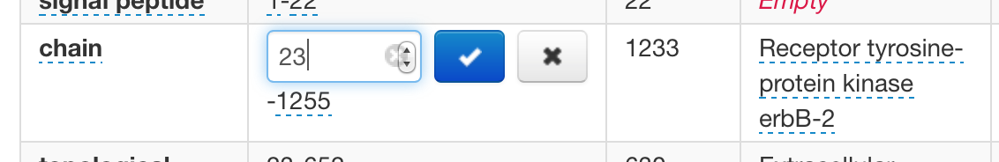
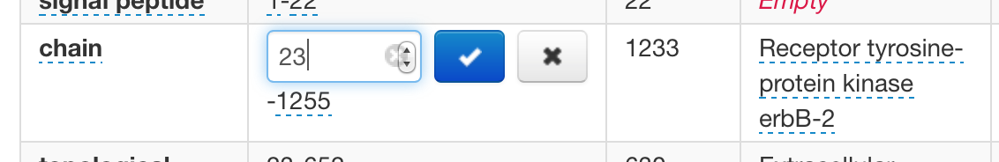

MyBioDb
Warning: pre-alpha software
View the Project on GitHub apierleoni/MyBioDb
Screenshots

 

MyBioDb
A fully featured Biological database webapp based on:
- your BioSQL database
- BioPython
- web2py
- bootstrap and JQuery
- whoosh or solr if you want to index the database
Install
- clone this repo into a web2py application folder
- launch web2py:
python web2py.py - if running locally go to http://localhost:8000/MyBioDb
- enjoy
What can you do with MyBioDb?
- load entries (from local or remote source) in any BioPython supported format to a BioSQL database
- view each entry with full CRUD options
- search the db with simple or complex queries
- full indexed data with whoosh (default and portable), solr, elasticsearch (recommended)
- full auth support for editing and search results (private and public entries)
- entry versioning
- admin page for management
How can I use it with my BioSQL db?
- edit the connection string on
/modules/biodb.py - currently tested with SQLite and MySQL, has some issue with postgres
What if I don't have a BioSQL db? Wait, what is a BioSQL db?
- take a look at this
- don't worry MyBioDb will create a BioSQL database for you (but depending on the backend you use it could be not 100% identical to one created with the offical BioSQL sql)
- by default MyBioDb will use a local SQLite db